長期トレンド
JKMとJEPXシステムプライスの推移グラフ
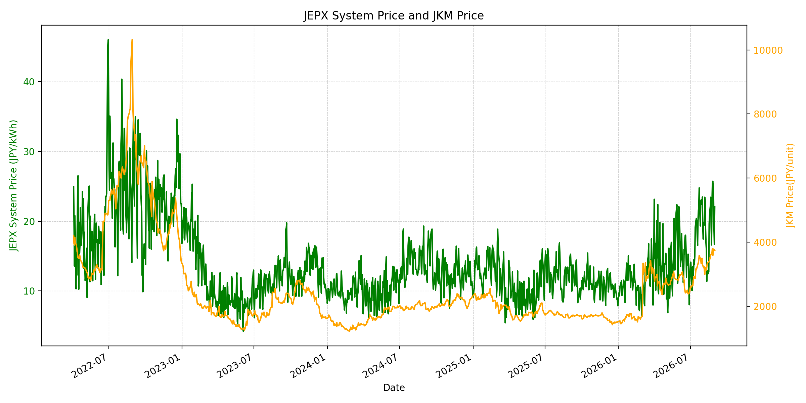
WTIの推移グラフ
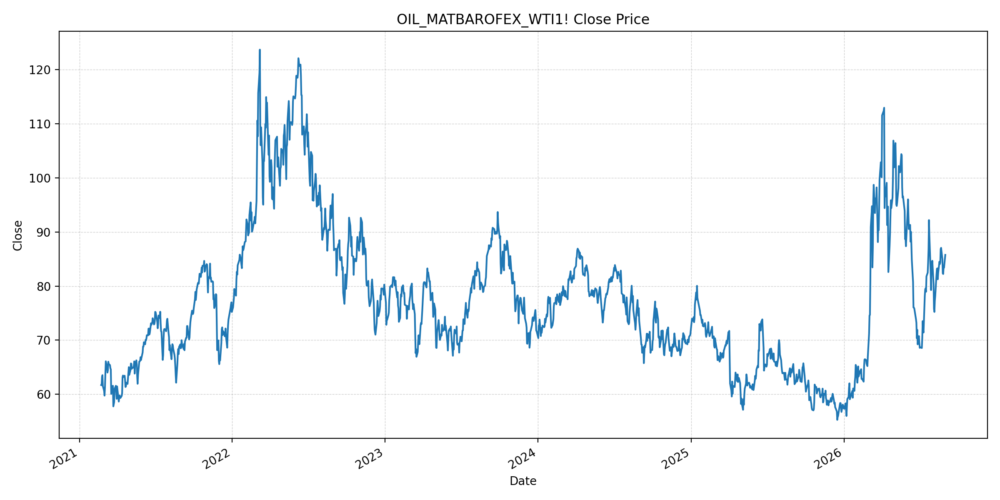
JEPXエリアプライスグラフ（直近一年分）
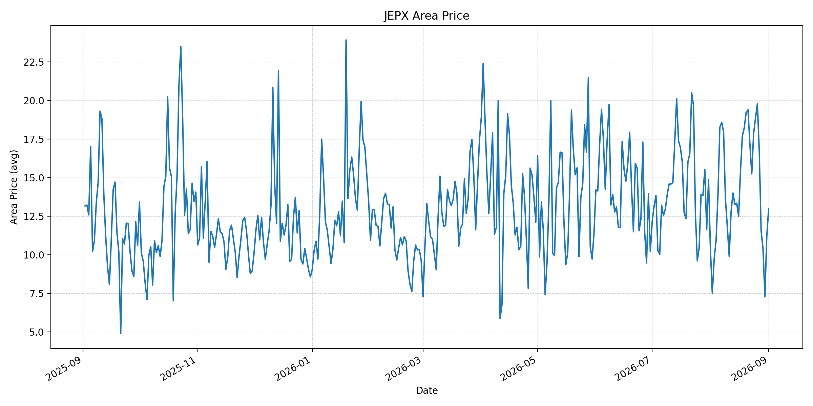
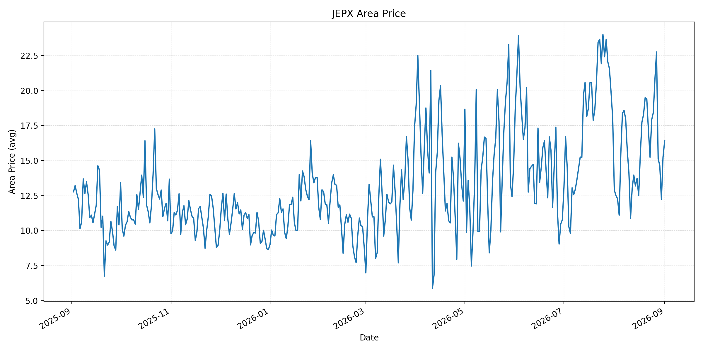
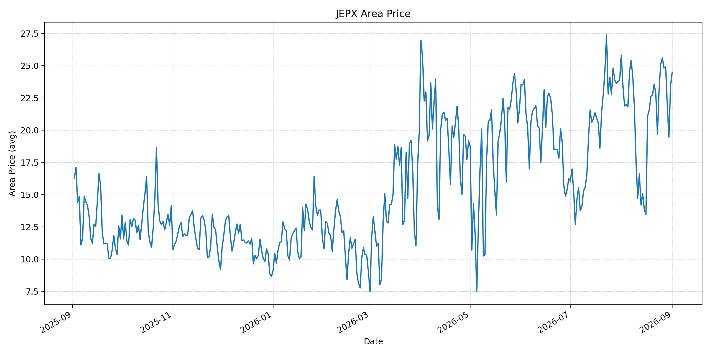
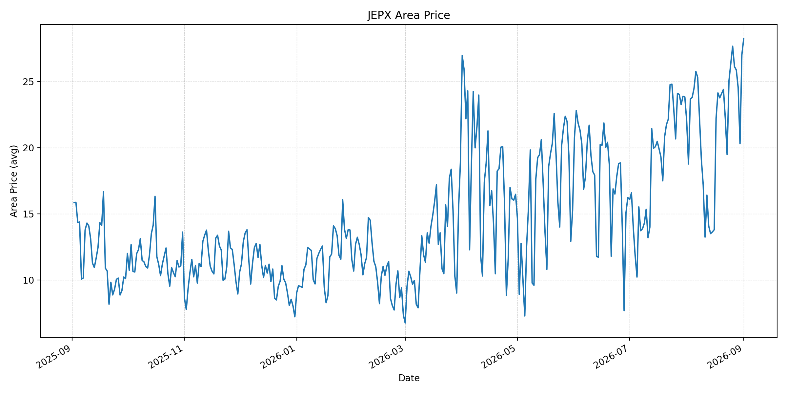
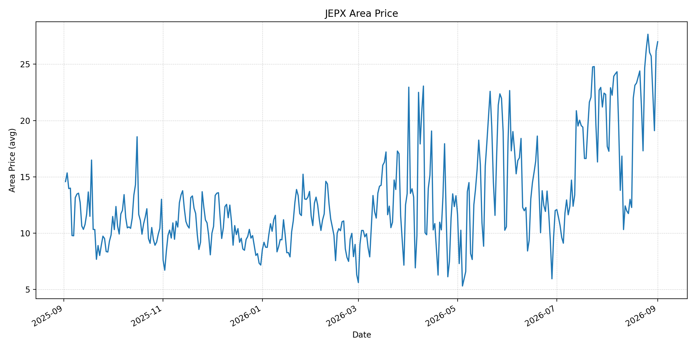
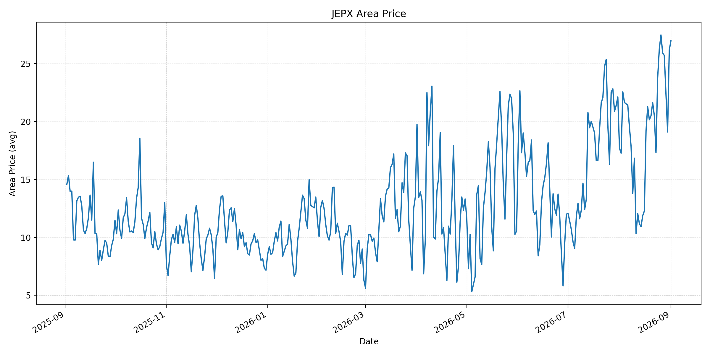
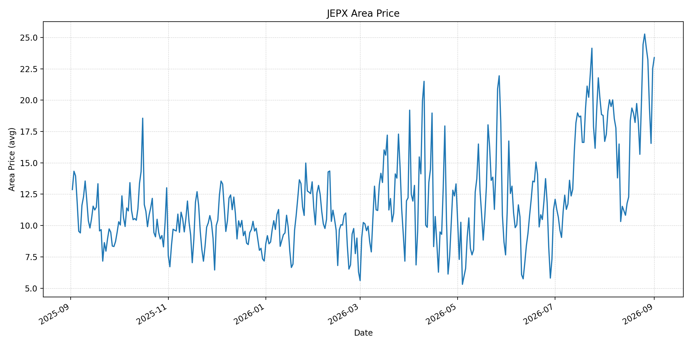
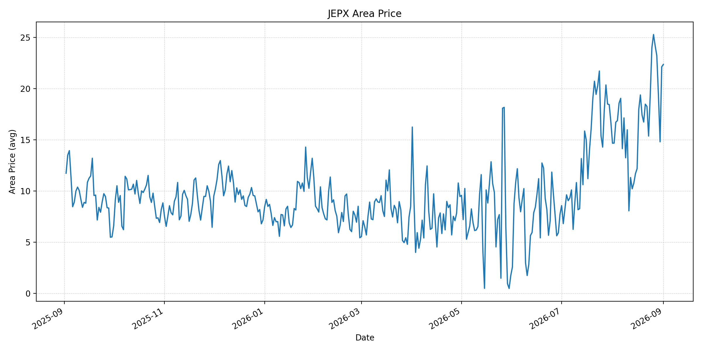
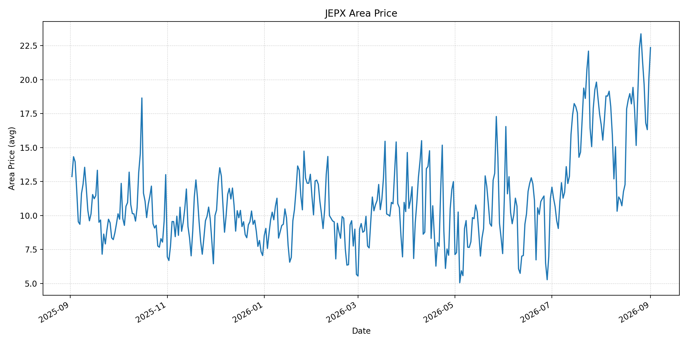
短期トレンド
JKMとJEPXシステムプライスの推移グラフ
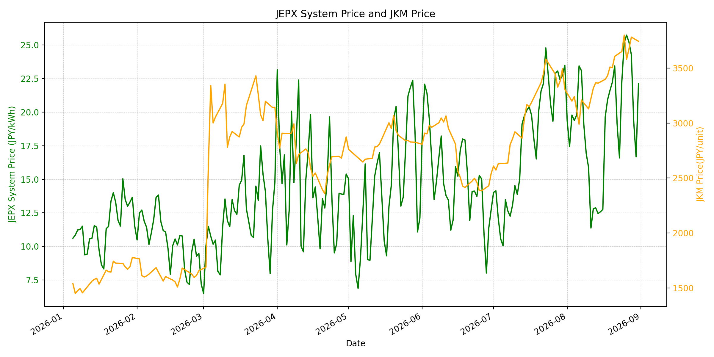
WTIの推移グラフ
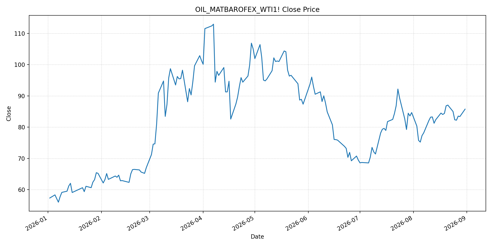
JEPXシステムプライス
最新値は 2026-09-01 分、先週終値は 2026-08-25、先月終値は 2026-08-31 時点の直近値です。
| エリア | 当日価格 | 前日価格 | 前日比（％） | 先週終値 | 先週比（％） | 先月終値 | 先月比（％） | 過去最高値 | 最高値比（％） |
|---|---|---|---|---|---|---|---|---|---|
| システム | 25.07 | 22.10 | 13.44 | 25.18 | -0.44 | 22.10 | 13.44 | 64.06 | -60.87 |
| 北海道 | 13.00 | 11.18 | 16.28 | 18.86 | -31.07 | 11.18 | 16.28 | 73.92 | -82.41 |
| 東北 | 16.41 | 15.25 | 7.61 | 18.42 | -10.91 | 15.25 | 7.61 | 84.92 | -80.68 |
| 東京 | 24.48 | 23.47 | 4.30 | 25.12 | -2.55 | 23.47 | 4.30 | 86.13 | -71.58 |
| 中部 | 28.23 | 27.01 | 4.52 | 26.37 | 7.05 | 27.01 | 4.52 | 52.06 | -45.78 |
| 北陸 | 27.00 | 26.18 | 3.13 | 26.37 | 2.39 | 26.18 | 3.13 | 46.48 | -41.92 |
| 関西 | 26.97 | 26.17 | 3.06 | 26.27 | 2.66 | 26.17 | 3.06 | 46.48 | -41.98 |
| 中国 | 23.39 | 22.51 | 3.91 | 24.44 | -4.30 | 22.51 | 3.91 | 46.48 | -49.68 |
| 四国 | 22.35 | 22.12 | 1.04 | 23.98 | -6.80 | 22.12 | 1.04 | 46.48 | -51.92 |
| 九州 | 22.36 | 20.06 | 11.47 | 22.28 | 0.36 | 20.06 | 11.47 | 40.54 | -44.85 |
LNG先物価格
最新値は 2026-08-31 の LNG(close) です。先週終値は 2026-08-24、先月終値は 2026-07-31 時点の直近値です。
| 当日価格 | 前日価格 | 前日比（％） | 先週終値 | 先週比（％） | 先月終値 | 先月比（％） | 過去最高値 | 最高値比（％） |
|---|---|---|---|---|---|---|---|---|
| 3744.00 | 3782.00 | -1.00 | 3651.00 | 2.55 | 3307.00 | 13.21 | 10319.00 | -63.72 |
石油先物価格
最新値は 2026-08-31 の OIL(close) です。先週終値は 2026-08-24、先月終値は 2026-07-31 時点の直近値です。
| 当日価格 | 前日価格 | 前日比（％） | 先週終値 | 先週比（％） | 先月終値 | 先月比（％） | 過去最高値 | 最高値比（％） |
|---|---|---|---|---|---|---|---|---|
| 85.76 | 83.40 | 2.83 | 85.01 | 0.88 | 84.67 | 1.29 | 123.70 | -30.67 |
ニュース
イラン情勢に関するニュース
- 8月31日、アラブ首長国連邦は領海上でイランの無人機を迎撃したと発表しました。週末の米・イラン間の応酬後、地域の軍事的緊張は再び高まっています。参照: AP, 2026-08-31
- 米国によるラーラク島の発射装置攻撃とイランの報復を受け、追加攻撃の可能性が報じられました。航行再開を巡る政治的な合意形成は不透明です。参照: Reuters, 2026-09-01
ホルムズ海峡経由の石油・LNGに関するニュース
- 8月31日のWTIは、米・イラン間の軍事行動再開による供給途絶懸念を受けて 2.83% 上昇し、85.76ドルで取引を終えました。参照: Reuters, 2026-08-31
- 可視化された商品船の海峡通航は週末に1日5隻まで落ち込み、タンカー・LNG船の輸送リスクは継続しています。参照: Reuters, 2026-08-31
ホルムズ海峡経由でない石油・LNGに関するニュース
- 過去24時間で、ホルムズ海峡を経由しないLNG供給量を直接変更する主要な新規公表は確認できませんでした。
- 中東の迂回パイプラインと調達先多様化は、海峡依存を下げる中長期の対策として位置付けられています。参照: Reuters, 2026-08-26
日本国内のイラン戦争に関係するニュース
- 過去24時間で、JEPX制度または国内電力需給ルールを直接変更する主要な新規公表は確認できませんでした。
- 政府はホルムズ回避のパイプライン支援と原油調達先の多様化を含む供給強靭化策を示しており、具体策は年内の制度化を見込んでいます。参照: Reuters, 2026-08-26
インサイト
ニュース事項による日本の電力市場への影響（短期：数日〜1週間）
- JEPXシステムは 25.07 円/kWhで前日比 13.44%、先週比 -0.44% です。中部 28.23 円/kWh、北陸 27.00 円/kWh、関西 26.97 円/kWhは先週を上回っています。
- WTIは 85.76 ドルで前日比 2.83%、LNGは 3744.00 で前日比 -1.00% です。海峡通航低迷と軍事行動の再開は、次のLNG取引日にリスクプレミアムを再び押し上げる可能性があります。
- 数日から1週間では、追加の安全事案、通航船舶数、仲介協議の進展を日次で確認する必要があります。JEPXは燃料市況に加え、エリア別需給と連系制約で変動します。
ニュース事項による日本の電力市場への影響（長期：1ヶ月〜半年）
- LNGは先月比 13.21%、WTIは先月比 1.29% です。燃料高が持続すれば、火力の限界費用を通じて卸電力価格に上昇圧力がかかる可能性があります。
- システム価格は先月比 13.44%、九州は 11.47%、中部は 4.52% です。各エリアの上昇は一様ではないため、燃料要因と需給要因を分けて監視します。
- 迂回パイプラインと調達多様化が実装されれば供給途絶への耐性は高まりますが、実際の物流能力と契約調達量は別途検証が必要です。システム価格、LNG、WTIはいずれも過去最高値を下回っており、短期的なリスクプレミアムと長期的な供給制約を分けて評価します。